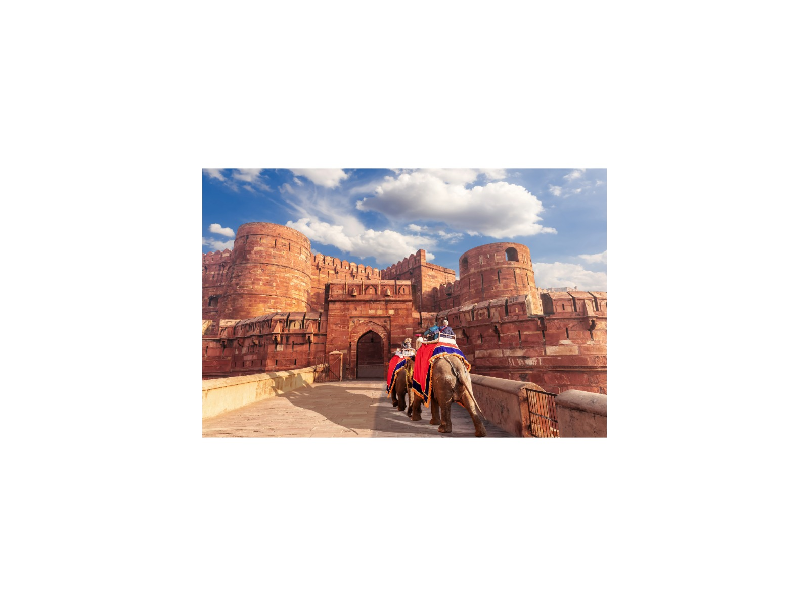
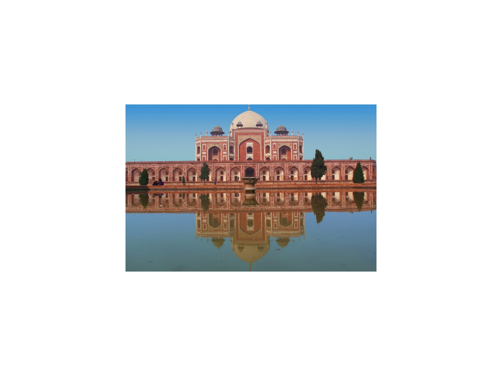

Форт Агры
Дворец-крепость из красного песчаника Великих Моголов
Обзор
Форт Агры был главной резиденцией могольских императоров, пока столицу не перенесли в Дели. Стены из красного песчаника скрывают дворцы, залы приёмов и мечети, соединяющие индуистские и исламские мотивы. Нынешний форт начал строить Акбар в 1565 году; Джахангир и Шах-Джахан достраивали его, прежде всего мраморными павильонами.
По преданию, Шах-Джахан провёл последние годы под стражей в форте, глядя через реку на построенный им Тадж-Махал.
На что обратить внимание
- Диван-и-Ам — зал публичных приёмов и мраморный Диван-и-Кхас
- Мусамман-Бурдж — восьмигранная башня с видом на Тадж
- Джахангири-Махал — дворец из песчаника, сочетающий раджпутский и могольский стили
- Стены и ворота форта снаружи
Советы по посещению
- Отведите около двух часов и совмещайте с Тадж-Махалом в один день.
- Обувь должна быть удобной: форт большой, с пандусами и ступенями.
- Часть территории закрыта: там расположена армия.
- В конце дня свет тёплый на песчанике.
Почему стоит идти с частным гидом
Частный гид покажет и объяснит: диван-и-Ам — зал публичных приёмов и мраморный Диван-и-Кхас; мусамман-Бурдж — восьмигранная башня с видом на Тадж. Он также выберет лучшее время визита (утро или конец дня).
Ещё фотографии


Рядом
Итимад-уд-Даула («Малый Тадж») Тадж-Махал Фатехпур-Сикри (Буланд-Дарваза) Мехтаб-Баг Мавзолей Акбара в Сикандре Прем Мандир Гробница Салима Чишти
Путешествия, включающие это место
 1 день
1 деньОднодневный частный тур из Дели: Тадж-Махал и форт Агры
Утренний свет на Тадж-Махале и красные дворики форта Агры за один частный день из Дели — с личным гидом и автомобилем.
Подробнее →2 дня2 дня: Агра и Джайпур — Тадж-Махал и Розовый город
Тадж-Махал на закате и форты и дворцы Джайпура — быстрый тур с ночёвкой для тех, кто любит ранние подъёмы.
Подробнее →2 дня2 дня: Агра, Фатехпур-Сикри и императорские мавзолеи Моголов
Спокойный могольский уикенд в Агре: Тадж-Махал на рассвете и закате, форт Агры, Фатехпур-Сикри и императорские мавзолеи.
Подробнее →
3 дня3 дня: Золотой треугольник — Дели, Агра и Джайпур
Дели, Агра и Джайпур за три дня: самое важное из классического маршрута по Индии с частным гидом.
Подробнее → 4 дня
4 дня4 дня: Золотой треугольник экспресс — Дели, Джайпур и Агра
Полный Золотой треугольник за четыре дня: от переулков Старого Дели до фортов Джайпура, Фатехпур-Сикри и рассвета у Тадж-Махала.
Подробнее →5 дней: классический Золотой треугольник — раджпутская и могольская Индия
Классический Золотой треугольник без спешки: горные форты Джайпура, колодец Чанд-Баори и рассвет у Тадж-Махала.
Подробнее →Расскажите о датах и интересах
Я лично подготовлю программу и расчёт стоимости в течение 24 часов. Никаких групп и шаблонов.